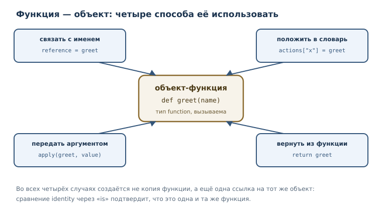
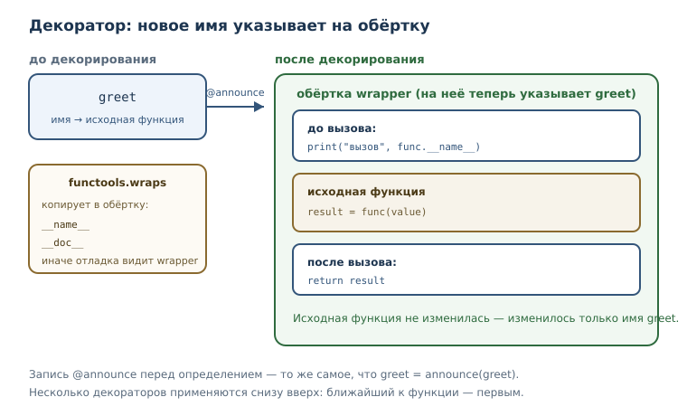

Функции как объекты: замыкания и декораторы
Функции первого класса, функции высшего порядка, замыкания, nonlocal и декораторы: как передавать поведение и оборачивать его.
В этой главе
До сих пор функция была для нас «действием»: вы её определяете, вызываете и получаете результат. Но в Python функция — ещё и значение, такой же объект, как число или список. Её можно связать с именем, положить в словарь, передать другой функции, вернуть из неё и даже завернуть в обёртку, которая изменит поведение. Эта возможность — не трюк для избранных, а рабочий инструмент: именно на ней строятся сортировка по ключу, декораторы, обработчики событий, регистрация плагинов и многое другое.
В главе вы увидите две связанные идеи. Первая — функция как значение, которую можно передавать и возвращать. Вторая — замыкание: функция, которая запоминает имена из объемлющей области и продолжает ими пользоваться после её завершения. На замыкании держатся декораторы — способ добавить функции новое поведение, не переписывая её тело.
22.1 Что вы сможете после этой главы
- объяснять, что функция в Python — объект, и использовать это на практике;
- передавать функции в функции и возвращать их как результат;
- писать замыкания и понимать, какие имена они захватывают;
- изменять захваченную переменную через
nonlocal; - писать декораторы с
functools.wrapsи не терять имя и документацию; - отличать вызов функции от ссылки на неё.
Все примеры в главе запускаются автоматически, поэтому вы можете сверять свои результаты с напечатанными.
22.2 Функция — обычный объект
Функция первого класса — обычный объект, который можно передавать, хранить в структурах и возвращать из других функций. В Python все функции первого класса: ограничений на них нет, и это не отдельный вид функций, а свойство языка.
Что это даёт на практике? Функцию можно связать с другим именем и вызвать через него. Никакого копирования не происходит: оба имени указывают на один объект, как и в случае со списками из главы о ссылках.
def greet(name):
return "привет, " + name
reference = greet
print(type(greet).__name__)
print(reference("Анна"))
print(greet is reference)
function
привет, Анна
True
Тип function — не особенность вывода, а настоящий тип объекта, как int или
list. Функции можно складывать в списки, словари и кортежи. Например,
таблица команд превращает строку в действие.
def add(a, b):
return a + b
def multiply(a, b):
return a * b
operations = {"сложить": add, "умножить": multiply}
print(operations["сложить"](2, 3))
print(operations["умножить"](2, 3))
5
6
Обратите внимание на запись operations["сложить"](2, 3): сначала по ключу
получается функция, затем она вызывается с двумя аргументами. Именно так
устроены многие диспетчеры команд и обработчики событий.
У функции есть и собственные атрибуты, как у любого объекта. Два самых
полезных — __name__ и __doc__: имя и строка документации.
def greet(name):
"""Возвращает приветствие."""
return "привет, " + name
print(greet.__name__)
print(greet.__doc__)
print(callable(greet))
print(callable("строка"))
greet
Возвращает приветствие.
True
False
callable проверяет, можно ли вызвать объект. Строку вызвать нельзя, функцию —
можно, и именно поэтому функцию разрешено передать туда, где ожидается
«что-то, что можно вызвать».
22.3 Функции высшего порядка
Функция высшего порядка — функция, принимающая другие функции как аргументы или возвращающая функцию. Самый простой пример — применить функцию дважды.
def apply_twice(func, value):
return func(func(value))
def double(x):
return x * 2
print(apply_twice(double, 3))
12
Здесь apply_twice получает double как аргумент и вызывает её дважды:
double(3) равно 6, затем double(6) равно 12. Обратите внимание, что
передаётся не результат вызова, а сама функция — без скобок. Разница между
double и double(3) — ключевая: первое означает «вот функция», второе —
«вычисли результат».
Функция высшего порядка позволяет отделить «что делать» от «как обходить
данные». apply_twice знает, как применить действие дважды, но не знает, что
именно за действие. В главе о функциональных приёмах вы увидите, что на этой
идее построены map, filter и сортировка по ключу.

22.4 Замыкание
Функция высшего порядка может не только принимать функцию, но и возвращать её. Если возвращаемая функция использует имена из внешней функции, получается замыкание — функция, которая захватывает имена (переменные) из объемлющей области видимости и продолжает ими пользоваться после её завершения. Захватывается именно имя, а не снимок значения, — ниже это показано на примере.
def make_multiplier(factor):
def multiply(value):
return value * factor
return multiply
double = make_multiplier(2)
triple = make_multiplier(3)
print(double(10), triple(10))
20 30
Разберём, что произошло. make_multiplier(2) создала локальную переменную
factor = 2 и вернула функцию multiply. К моменту вызова double(10)
функция make_multiplier давно завершилась, но multiply продолжает видеть
factor. Это и есть захват: имя factor хранится в замыкании вместе с
функцией.
Повторный вызов make_multiplier(3) создаёт другое замыкание со своим
factor. Два замыкания независимы, как два итератора одного списка.
Механику областей видимости и правило поиска имён мы разбирали в главе об областях видимости и рекурсии (глава 8). Здесь важно только следствие: имя, которого нет в локальной области, функция ищет в объемлющей, и это имя остаётся доступным, даже когда внешняя функция уже вернула результат.
nonlocal: изменение захваченной переменной
Замыкание может не только читать внешнее имя, но и менять его. Обычное
присваивание создало бы локальную переменную, поэтому нужно явно указать, что
имя относится к объемлющей области, — для этого служит инструкция nonlocal.
def make_counter():
count = 0
def step():
nonlocal count
count = count + 1
return count
return step
counter = make_counter()
print(counter())
print(counter())
print(counter())
1
2
3
Без nonlocal строка count = count + 1 создала бы локальную count и
программа упала бы с UnboundLocalError: имя используется до присваивания.
nonlocal говорит: «это имя из объемлющей функции, меняй именно его».
Два замыкания одной внешней функции могут делить состояние — это основа объектов со скрытым состоянием, которые позже станут классами.
def make_pair():
count = 0
def increase():
nonlocal count
count = count + 1
return count
def read():
return count
return increase, read
increase, read = make_pair()
print(increase())
print(increase())
print(read())
1
2
2
increase и read захватили одну и ту же переменную count, поэтому чтение
видит изменения, сделанные увеличением.
Захват имеет и обратную сторону: замыкание удерживает объекты живыми, пока само существует. Если функция захватила большой список, память не освободится, даже когда внешняя функция давно завершилась. Для небольших значений это незаметно, но в долгоживущей программе захваченные структуры стоит освобождать явно — например, не хранить замыкание дольше, чем нужно. Поэтому замыкания хорошо подходят для небольших настроек, счётчиков и фабрик функций, но плохо — для хранения снимков больших коллекций.
Замыкание хранит имя, а не значение
Тонкость, которую полезно увидеть один раз: замыкание запоминает имя из объемлющей области, а не снимок его значения. Если имя меняется после создания замыкания, функция увидит новое значение.
def make_actions():
actions = []
for step in range(3):
def action():
return step
actions.append(action)
return actions
for action in make_actions():
print(action())
2
2
2
Все три функции захватили одну и ту же переменную step, а к моменту вызова
она уже равна 2. Чтобы получить разные значения, захватывают параметр, а не
переменную цикла: например, фабрика принимает step аргументом.
22.5 Декоратор
Декоратор — функция, принимающая функцию и возвращающая новую функцию с
расширенным поведением; применяется синтаксисом @. Декоратор — частный
случай функции высшего порядка: он получает функцию и возвращает функцию.
Сначала соберём декоратор вручную, без синтаксиса @.
def announce(func):
def wrapper(value):
print("вызов", func.__name__)
return func(value)
return wrapper
def greet(name):
return "привет, " + name
greet_with_log = announce(greet)
print(greet_with_log("Анна"))
вызов greet
привет, Анна
announce получила greet, создала локальную функцию wrapper, которая
печатает строку и вызывает исходную функцию, и вернула обёртку. Исходная
функция не изменилась — изменилось то, что мы вызываем.
Синтаксис @ делает то же самое короче: строка @announce перед
определением означает greet = announce(greet).
def announce(func):
def wrapper(value):
print("вызов", func.__name__)
return func(value)
return wrapper
@announce
def greet(name):
return "привет, " + name
print(greet("Анна"))
вызов greet
привет, Анна
Обратите внимание: после декорирования имя greet указывает уже на wrapper.
Поэтому при вызове сначала работает обёртка, а внутри неё — исходная функция.
Такой приём используют для логирования, проверки аргументов, измерения
времени, повторных попыток и кэширования.
Декораторы ценны не только в отладке. В библиотеках они помечают функции как команды, регистрируют обработчики, ограничивают доступ и проверяют права. Общее у всех применений одно: обёртка добавляет поведение, не меняя тело исходной функции. Поэтому декоратор — способ расширения, а не переписывания.

Наш декоратор подходит только функциям с одним параметром. Универсальная обёртка должна принимать любые аргументы и передавать их дальше без потерь; синтаксис для этого появится в главе о гибких сигнатурах (глава 24). Пока достаточно понимать устройство: декоратор — это функция, которая возвращает функцию.
Ограничение полезно осознать, потому что оно объясняет, почему «настоящие» декораторы выглядят сложнее. Обёртка повторяет сигнатуру исходной функции: если та принимает два аргумента, обёртка объявляет два. Такой код работает, но привязывает декоратор к одной форме вызова. Библиотечные декораторы поэтому принимают любые аргументы и передают их как есть — именно этот приём мы разберём в следующей части книги.
22.6 functools.wraps: сохранить имя и документацию
У обёртки есть неприятный побочный эффект: она теряет «личность» исходной
функции. Имя greet теперь принадлежит wrapper, а документация и имя
оригинала спрятаны внутри. Это ломает отладку, автодокументацию и справочные
системы.
functools.wraps — декоратор, сохраняющий у обёрнутой функции метаданные
исходной: имя, docstring, модуль, квалифицированное имя, аннотации — и ссылку
на оригинал в __wrapped__. Он применяется к самой обёртке внутри декоратора.
import functools
def announce(func):
@functools.wraps(func)
def wrapper(value):
print("вызов", func.__name__)
return func(value)
return wrapper
@announce
def greet(name):
"""Возвращает приветствие."""
return "привет, " + name
print(greet("Анна"))
print(greet.__name__)
print(greet.__doc__)
вызов greet
привет, Анна
greet
Возвращает приветствие.
Без functools.wraps две последние строки показали бы wrapper и None.
Наличие wraps в декораторе — признак аккуратной реализации: он стоит одной
строки, а экономит часы отладки.
22.7 Несколько декораторов на одной функции
Декораторы можно навешивать друг на друга. Важно помнить порядок: ближайший к функции декоратор применяется первым, поэтому при вызове внешний слой срабатывает раньше внутреннего.
def first(func):
def wrapper(value):
print("первый: до")
result = func(value)
print("первый: после")
return result
return wrapper
def second(func):
def wrapper(value):
print("второй: до")
result = func(value)
print("второй: после")
return result
return wrapper
@first
@second
def greet(name):
return "привет, " + name
print(greet("Анна"))
первый: до
второй: до
второй: после
первый: после
привет, Анна
Запись читается снизу вверх: greet сначала оборачивается в second, затем
результат — в first. При вызове внешняя обёртка (first) входит первой и
выходит последней, как матрёшка. Так устроены сочетания «логирование + проверка
аргументов + кэширование»: каждый слой отвечает за своё.
22.8 Модуль functools
Модуль functools — модуль стандартной библиотеки с инструментами для
работы с функциями: wraps, partial, lru_cache. С wraps вы уже
познакомились. partial создаёт вызываемый объект-обёртку, в котором часть
аргументов уже зафиксирована.
import functools
def power(base, exponent):
return base ** exponent
square = functools.partial(power, exponent=2)
print(square(5))
print(power(5, 2))
25
25
partial не переопределяет функцию, а создаёт обёртку: при вызове square(5)
недостающий аргумент exponent подставляется равным 2. Это удобно, когда
функцию с несколькими аргументами нужно передать туда, где ожидается функция
с меньшим числом параметров.
Третий инструмент, lru_cache, запоминает результаты вызовов и возвращает
готовый ответ при повторных аргументах. Это разновидность кэширования; мы
разберём её в главе о производительности (глава 40), а пока достаточно знать,
что такой инструмент существует и живёт в functools.
22.9 Типичные ошибки
- Передать результат вместо функции.
apply_twice(double(3), 3)— ошибка:double(3)уже число, а не функция. Нужноapply_twice(double, 3). - Забыть вернуть обёртку из декоратора. Тогда именем функции станет
None(greet = broken(greet)), и декорирование пройдёт молча.TypeErrorвозникнет только при первом вызове — поэтому такая ошибка диагностируется позже, чем хотелось бы. - Забыть
nonlocal. Присваивание имени из объемлющей области создаёт локальную переменную, и замыкание перестаёт видеть общую. - Не применять
functools.wraps. Обёртка теряет имя и документацию; трассировки и справочники показываютwrapper. - Считать, что декоратор меняет исходную функцию. Он возвращает новую; исходная остаётся доступной внутри обёртки и продолжает работать, если её вызвать напрямую.
- Путать декоратор с паттерном «декоратор». В Python декоратор — это
синтаксис
@и функция-обёртка; одноимённый паттерн проектирования решает другую задачу и будет обсуждаться отдельно.
Проверим вторую ошибку: если декоратор забыл вернуть обёртку, имя функции
становится None.
def broken(func):
def wrapper(value):
return func(value)
@broken
def greet(name):
return "привет, " + name
print(greet("Анна"))
TypeError: 'NoneType' object is not callable
22.10 Упражнения
1. Прогнозирование вывода
Не запуская код, запишите результат. Затем проверьте и объясните.
def apply_twice(func, value):
return func(func(value))
def add_one(x):
return x + 1
print(apply_twice(add_one, 5))
print(apply_twice(add_one(5), 5))
2. Функция в словаре
Создайте словарь из трёх функций: приветствие, прощание, вопрос.
Напишите программу, которая по названию действия вызывает нужную функцию и
печатает результат. Обработайте неизвестное название.
3. Функция высшего порядка
Напишите функцию combine(first, second, value), которая применяет first,
затем second к результату. Проверьте её на функциях удвоения и прибавления
единицы.
4. Замыкание-умножитель
Напишите функцию make_adder(amount), возвращающую функцию, которая
прибавляет amount к аргументу. Создайте две такие функции и проверьте, что
они независимы.
5. Счётчик с nonlocal
Напишите функцию make_counter(), возвращающую функцию без аргументов.
Каждый вызов возвращает следующее число, начиная с единицы. Проверьте, что
два независимых счётчика не влияют друг на друга.
6. Декоратор-логгер
Напишите декоратор log_call, который перед вызовом функции печатает её имя,
а затем возвращает результат. Примените его к функции с одним аргументом и
проверьте вывод.
7. wraps на практике
Возьмите декоратор из упражнения 6, добавьте functools.wraps и сравните
__name__ и __doc__ декорированной функции до и после добавления wraps.
Объясните различие.
8. Декоратор с параметром
Напишите декоратор repeat(times), который вызывает функцию несколько раз и
возвращает последний результат. Подсказка: это три уровня вложенности —
внешняя функция принимает параметр, средняя получает функцию, внутренняя
вызывает её.
9. Мини-проект: проверка аргументов
Напишите декоратор require_positive, который перед вызовом функции с одним
числовым аргументом проверяет, что аргумент больше нуля, и печатает сообщение
об ошибке вместо вызова, если условие нарушено. Проверьте на положительном и
отрицательном значении.
10. Замыкание или класс
Сравните два способа хранить состояние: замыкание make_counter и словарь с
ключом-счётчиком. Напишите оба варианта и объясните, в чём разница для
вызывающего кода. Когда, по вашему мнению, замыкание удобнее?
22.11 Проверка понимания
- Что значит «функция первого класса»? Приведите три действия, которые можно делать с функцией.
- Чем
doubleотличается отdouble(3)при передаче в функцию высшего порядка? - Что такое замыкание и почему захваченное имя остаётся доступным после завершения внешней функции?
- Зачем нужно
nonlocal? Что произойдёт, если его не указать? - Что делает декоратор и что означает строка
@announce? - Зачем
functools.wraps, если декоратор работает и без него? - Чем
functools.partialотличается от новой функции, написанной вручную?
22.12 Что дальше
Функции как объекты открыли способ передавать поведение. Следующая глава
доводит эту идею до практических приёмов: включения, лямбда-выражения,
map и filter, сортировка по ключу и чистые функции. Вы увидите, что
многие задачи, которые раньше требовали цикла с накоплением, записываются
одной выразительной строкой. При этом мы будем следить за читаемостью: короткая
запись хороша тогда, когда она понятна с первого взгляда.